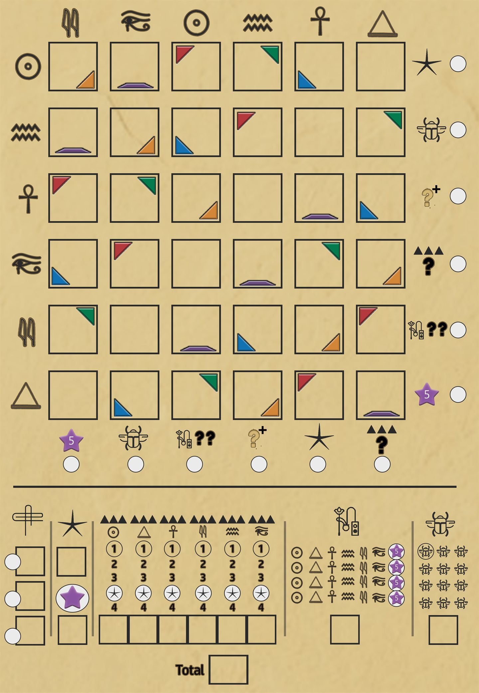

Draw two Priest cards to begin.
Royal objectives

Score
The court requires 150 points.
- Board
- 0
- Objectives & ritual
- 0
- Palette & scarabs
- 0
Solo rules & controls
Each turn choose which revealed Priest card supplies the top half (the hieroglyph and colour) and which supplies the bottom-half action. You begin with random, distinct palette glyphs equal to the ritual difficulty. Scribe into a matching coloured square or an empty wild square. Before scribing, palette glyphs may modify only the selected card’s top glyph/colour. A scribe is required before the action. Error cards must be resolved before another Priest is drawn: spend a scarab or cross out an eligible square that is not orthogonally adjacent to another crossed-out square. If no eligible square exists, the error may be skipped. The app builds the official solo deck: 42 Priest cards and 9 Error cards.
Completing a row or column of hieroglyphs (errors do not count) earns the bonus shown beside its white circle. The app marks each claimed circle and guides you through any bonus choice. Multiplier actions circle the next number for the glyph shown below the up-triangle icon. Palette actions circle the two printed glyphs in their palette columns, from top to bottom. Scarab actions circle the next scarab. Extra draw lets you place a matching glyph adjacent to your new mark; Ritual records a ritual mark. Board score is calculated from row/column target glyphs and multipliers; each unused palette pair is 1 point (rounded up), and each unused scarab is 3 points.